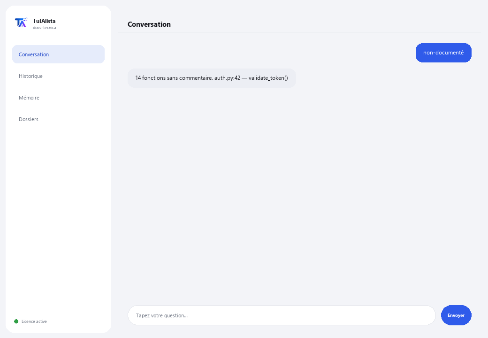

Agent de documentation technique
Génère et maintient la documentation technique de votre logiciel à partir de votre propre code, sans que le code quitte votre appareil.
Que résout-il et de quoi avez-vous besoin ?
La documentation prend toujours du retard : personne n'a le temps d'écrire le README, d'expliquer ce que fait chaque fichier ou de maintenir une FAQ. Cet agent scanne votre projet et le fait pour vous — il prend en charge Python, JS/TS, Java, C/C++, Go, PHP, Ruby, SQL, ainsi que RPG (AS/400/IBM i) et COBOL.
- Vous avez besoin de : votre clé de licence (TIA-XXXX-XXXX-XXXX-XXXX) et du dossier du projet. Ni Python ni connaissances techniques pour l'installer (bien qu'il soit conçu pour des équipes de développement).
- Premier résultat en moins de 5 minutes : vous installez, activez, choisissez votre dossier et lancez readme pour votre premier README généré.
- Votre code source ne quitte jamais votre ordinateur — l'analyse s'exécute localement.
soporte@tuialista.com ou visitez tuialista.com/soporte — nous répondons généralement le jour même.1 Ce que fait cet agent
Vous lui indiquez le dossier du projet et il :
- Scanne le code et en extrait la structure (fonctions, classes, commentaires, imports).
- Génère un README professionnel du projet (structure, composants, dépendances, usage).
- Documente un fichier spécifique en détail (but, fonctions, paramètres, notes).
- Génère une FAQ technique avec des questions et réponses basées sur le code.
- Détecte les fonctions et classes non documentées.
- Construit une carte des dépendances entre fichiers (internes et externes).
- Répond à des questions libres sur le code.
Prend en charge de nombreux langages : Python, JavaScript/TypeScript, Java, Kotlin, C/C++, Go, PHP, Ruby, SQL, ainsi que RPG (AS/400/IBM i) et COBOL, entre autres.
2 Installation (2 minutes)
Pour Windows. Pas besoin d'internet permanent ni de rien envoyer sur le cloud.
Téléchargez l'installateur depuis tuialista.com/descargar (agent Documentation technique) et ouvrez-le. Il crée un raccourci sur votre bureau avec le logo — pas besoin de Python ni de terminal.
Double-cliquez sur la nouvelle icône. Collez votre clé de licence (reçue par e-mail à l'achat) et cliquez sur Activer. Une coche verte apparaît quand elle est valide.
Sélectionnez le dossier du projet et cliquez sur Commencer à utiliser l'agent. La prochaine fois, il démarre directement — il se souvient de votre clé et de votre dossier.
3 Comment l'utiliser
L'agent ouvre une fenêtre de discussion, comme une app de messagerie — pas un écran noir de programmeur. Vous écrivez votre commande ou votre question dans le champ de texte en bas, cliquez sur Envoyer (ou Entrée), et la réponse apparaît comme un message, exactement comme sur cette image réelle :

Les commandes suivantes sont les mots que vous pouvez écrire dans ce même champ de texte :
> readmeREADME.md professionnel avec nom, structure, composants principaux, comment ils s'articulent, dépendances et instructions d'usage.
> faqDe 8 à 12 questions fréquentes techniques (architecture, comment quelque chose fonctionne, comment changer une fonctionnalité...) avec des réponses basées sur votre code.
> documenter <fichier>Documentation détaillée d'un fichier : but, chaque fonction/procédure (ce qu'elle fait, paramètres, retour), dépendances et notes.
> non-documentéFonctions et classes sans commentaires ni docstring, avec fichier et ligne.
> dépendancesCarte des dépendances : par fichier, quels modules internes du projet et quelles bibliothèques externes il utilise.
> analyser <fichier>Structure détectée d'un fichier (classes, fonctions avec leur ligne, imports) sans appeler l'IA.
> question libre ?Écrivez toute question en langage naturel, ex. : où le jeton de session est-il validé ?
> quitterTermine la session (fonctionne aussi avec exit).
4 Exemples d'usage courant
Documenter un nouveau projet
readme → faq
Comprendre un fichier hérité
analyser legacy/processus.cbl → documenter legacy/processus.cbl — fonctionne même avec du COBOL ou du RPG de systèmes AS/400.
Vérifier la dette de documentation
non-documenté
Vous orienter dans le code
comment l'application se connecte-t-elle à la base de données ?
5 Questions fréquentes
Mon code est-il envoyé sur internet ?
Quels langages prend-il en charge ?
Dois-je installer des bibliothèques supplémentaires ?
Ignore-t-il des dossiers comme node_modules ?
Modifie-t-il mon code ou écrit-il des fichiers ?
Quelle taille peut avoir le projet ?
Fonctionne-t-il pour du code AS/400 (RPG/COBOL) ?
Dans quelle langue répond-il ?
La documentation est-elle 100 % correcte ?
Puis-je documenter un seul fichier sans tout scanner ?
6 Résolution de problèmes
Affiche “0 fichiers indexés”
Ne trouve pas un fichier avec documenter/analyser
Le README ignore certains fichiers
Affiche “Licence invalide” ou demande de se reconnecter
“Aucun fournisseur d'IA configuré”
Aucune de ces solutions n'a résolu votre problème ? Écrivez-nous directement — nous serons ravis de l'examiner avec vous.
soporte@tuialista.com ou visitez tuialista.com/soporte — nous répondons généralement le jour même.7 Confidentialité
Votre code source ne quitte jamais votre ordinateur.
- L'agent scanne le projet et en extrait la structure localement, sur votre propre appareil. Il n'envoie votre code à aucun serveur.
- La détection de structure, la dette de documentation (non-documenté) et la carte des dépendances sont calculées sur votre machine.
- La seule chose qui transite par internet est : (1) une vérification que votre licence est active — qui n'inclut pas votre code —, et (2) lors de la génération d'un README, d'une FAQ, de la documentation d'un fichier ou d'une réponse à une question, des fragments du code (les plus pertinents) sont envoyés au moteur d'IA pour rédiger le texte.